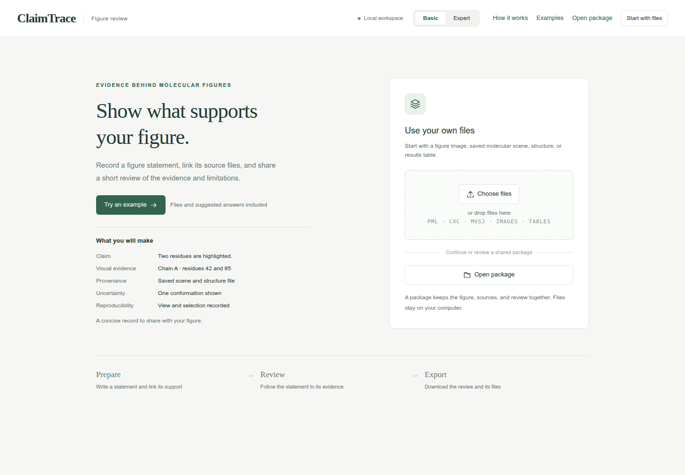
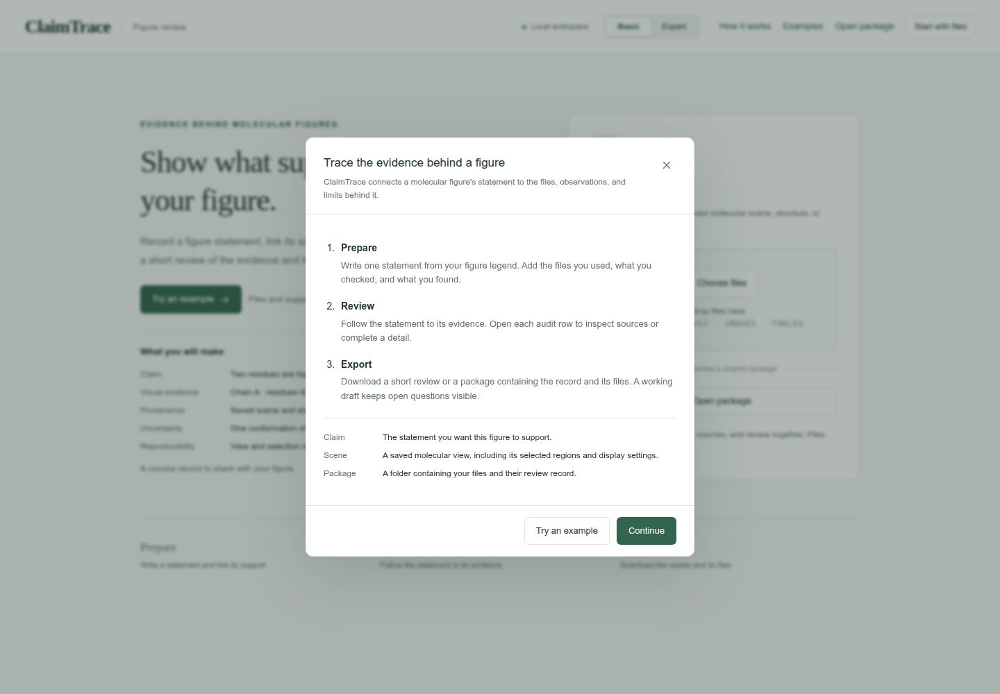

Browse the guide
Start hereAll 12 casesDescribe molecular views
Figure 1B1Pocket visibilityFigure 1B5Local to global contextFigure 1B6Preserve an alternate AP5 interaction viewCheck contacts and distances
Figure 1B2Contacts across viewsFigure 4ADocument conserved pocket-water selectionFigure 4CCheck short ligand contactsFigure 4DRecord an Asp110-ligand distanceCompare models and ensembles
Figure 1B3Confidence and geometryFigure 1B4AP5 conformational clustersFigure 4BCompare ranked ligand posesReview trajectories
Figure 4ETrace interaction state changesFigure 4FCompare trajectory repeatsShare and continue
Open a review packageStart here
Review one figure statement and export a package that another reader can inspect.
Begin with Figure 1B1: Pocket visibility. You will link two views of the same ligand to their source files and record the settings and interpretation limits. The example supplies input files, field values and screenshots for every step.
Install and open ClaimTrace, then return to this guide when the welcome page appears. Keep the application and tutorial in separate tabs, with Basic selected in ClaimTrace.
Already running ClaimTrace? Continue from its welcome page.
What you will do
- Prepare — import the supplied files, save one figure statement, and add its evidence and limitation.
- Review — inspect the five audit rows: Claim, Visual evidence, Provenance, Uncertainty and Reproducibility.
- Export — download a Working draft with the source files, saved record and open questions.
The first case begins with the input download. Keep its LAB_NOTES.txt open beside the tutorial as you enter the supplied observations.
Preview the workspace
Check: The welcome page offers Choose files and Open package.

For a short tour in ClaimTrace, open How it works. Close the tour to return to your current screen.

Evidence fields and audit status
Use each case's field values to record the supplied observations. Add your own measurement or replay result after performing that check.
Evidence fields
| Field | What to enter | Example |
|---|---|---|
| How was it checked? | The check or analysis used. | Pocket visibility source check |
| What did you find? | The observed result for this statement. | Both supplied views show 1AKE chain A and AP5. |
| Analysis settings | Selections, distance rules or sampled frames. | Chain A; ligand AP5; pocket within 4.2 angstrom. |
Audit status
| Status | Meaning | Next action |
|---|---|---|
| Recorded | The relevant details are saved. | Open the row and inspect the source record. |
| Review needed | The audit identifies a detail to complete or inspect. | Read the open question and keep it with the draft. |
| Replay pending | The saved molecular scene awaits a replay check. | Open it in its original molecular viewer. |
| Draft checks passed | The current record can be exported as a Working draft. | Download the package with its open questions. |
Read on GitHub: Start here in Markdown.
For offline reading, download claimtrace-tutorials-1.0.zip from the
v1.0 release,
extract it, and open the top-level index.html.
From a repository checkout, open docs/tutorial/index.html.
Keep the extracted folders together for screenshots and case downloads.